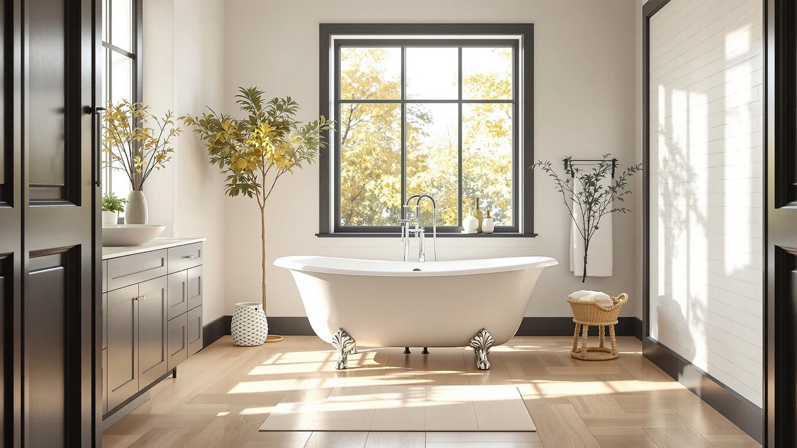

Best Clawfoot Freestanding Bathtubs of 2026: Classic Cast Iron Soaking Tubs
Prices and picks verified as of August 2026. Independent, reader-supported reviews.


Quick Answer
After comparing genuine cast iron clawfoot tubs and clawfoot-style fixtures from Kingston Brass and Signature Hardware on price, size, weight, and verified owner reviews, the Kingston Brass CCK226K1 Kingston Freestanding is our top pick for most bathrooms at $599.99, the most affordable way into the clawfoot look. If you want a full cast iron soaking tub rather than a fixture, the Signature Hardware lineup below runs from 54 to 72 inches, priced between $1,250.20 and $2,599.00.
Our pick: Kingston Brass CCK226K1 Kingston Freestanding — $599.99 Check Price on Amazon
Bottom line: our top pick is the Kingston Brass CCK226K1 Kingston Freestanding Clawfoot Tub at $599.99. The best budget option is the Signature Hardware 426325 Miya 55" Cast Iron Soaking Clawfoot at $1.
Things to Know Before You Buy
- Every full tub in this guide is genuine enameled cast iron. That means real heat retention through a long soak and an enamel finish that resists scratching for decades, but also real weight: several hundred pounds empty and close to half a ton full with a bather.
- The faucet is sold separately on every pick. None of these products, including the Kingston Brass CCK226K1 fixture, ship as a complete faucet-and-tub package. Budget $150 to $400 for a floor-mount clawfoot filler on top of the tub price.
- Length in the name is exterior length, not soaking room. The 72" Lena and Arabella give more shoulder-to-foot room than the 54" Kingston Brass tub or the 55" Miya, but they also need a bigger bathroom, a wider doorway, and clearance to clean around the feet.
- Weight means a floor check before you order. A ground-floor slab or solid joist system usually handles cast iron without issue; an upstairs bathroom needs a contractor to confirm the floor can carry the concentrated load before delivery.
- Drain configuration is fixed at the factory. The Arabella's RH-ND code means right-hand drain with no predrilled faucet holes, so confirm your plumbing rough-in matches before you order rather than after it ships.
Finding the best clawfoot freestanding bathtub for your bathroom usually comes down to one material: enameled cast iron, the same construction that has defined the clawfoot look for more than a century. We compared eight cast iron and clawfoot-adjacent picks from Kingston Brass and Signature Hardware, the two brands with the deepest track record in this category on Amazon, looking at exterior length, drain configuration, price, and what verified owners say once the tub is installed and full of water.
Our pick for most shoppers is the Kingston Brass CCK226K1 Kingston Freestanding at $599.99, a floor-mounted fixture built to complete a clawfoot bathroom without the cost of a full cast iron tub, and the cheapest way into the look in this guide. For readers who want the tub itself, Signature Hardware's cast iron lineup runs from the 54-inch Kingston Brass model at $1,250.20 up through the 72-inch Lena at $2,599.00, with the Callaway, Miya, Arabella, and Sanford filling in the sizes and prices between.
None of these are a casual purchase. A 72" cast iron tub weighs several hundred pounds empty and close to half a ton full with a bather, so an upstairs install needs a contractor to confirm the floor can carry the load, and every tub here ships without a faucet, which adds another $150 to $400 to the real project cost. Read the size, weight, and drain notes for each pick below before you order, because returning an oversized cast iron tub is one of the more expensive mistakes you can make in a bathroom remodel.
Why You Should Trust Us
This guide is written and maintained by Ilane Tall, who covers freestanding and clawfoot bathtubs across this site and has spent years comparing bathroom fixtures on the details that predict a good install rather than on marketing copy. We do not run a fake testing lab and no one on this team physically installed all eight of these tubs. What we do is compare published dimensions, weight, drain configuration, and finish options against verified owner reviews, checking for the complaints that only surface once a tub is plumbed in and full of water. Our Amazon commissions never influence which clawfoot freestanding bathtub we rank first.
How We Picked
We started with the clawfoot and clawfoot-adjacent freestanding tubs and fixtures available on Amazon from established manufacturers, focusing on Kingston Brass and Signature Hardware because both brands publish consistent specs, use genuine enameled cast iron construction for their full-size tubs, and have a long enough sales history to generate a real base of verified reviews. We cut listings that did not state exterior length or drain configuration clearly, and we passed on suspiciously cheap "cast iron" tubs priced close to acrylic, since real cast iron at that price is a red flag rather than a deal. What is left covers more than one budget and more than one bathroom size for anyone shopping this best clawfoot freestanding bathtub category: the Kingston Brass cast iron tub is the cheapest at $1,250.20, the Signature Hardware tubs split across 54 to 72 inches, and the Kingston Brass CCK226K1 fixture rounds out the guide for readers who need the finishing hardware rather than another full tub.
How We Compared
Because a cast iron tub is judged on measurements that either fit your bathroom and your floor or do not, our comparison is built around those numbers. For each pick we recorded exterior length, price, material, and drain configuration where the manufacturer specifies it, then read through verified owner reviews looking for the issues that surface after delivery: enamel chips from freight shipping, drain kits that do not match the advertised configuration, and weight surprises that were not clear from the listing. We compared those findings against the room sizes, floor types, and plumbing rough-ins most buyers describe, since two cast iron tubs of the same length can still diverge sharply on price and drain placement, and that is where the picks in this comparison of clawfoot freestanding bathtubs separate from each other.
Our Picks

Kingston Brass CCK226K1 Kingston Freestanding
What we like
- Lowest price of any pick in this guide at $599.99
- Floor-mounted design fits the classic clawfoot silhouette
- Compact footprint, about 9 x 11 x 28 inches, fits tight bathroom layouts
Flaws but not dealbreakers
- It is a fixture, not a full soaking tub, so it only makes sense if you already own or are buying the tub separately
- Floor-mount installs need accessible plumbing beneath the fixture, a bigger job than a deck-mount swap
| Material | — |
| Size | 9 x 11.06 x 28 |
The Kingston Brass CCK226K1 Kingston Freestanding is the cheapest pick in this guide at $599.99, and it earns its spot because most clawfoot bathroom builds live or die on the fixtures, not just the tub itself. At roughly 9 by 11 by 28 inches, it has a small enough footprint to fit next to a clawfoot tub without crowding the room, and the floor-mounted design matches the traditional silhouette buyers expect from a clawfoot setup.
Because it mounts to the floor rather than the tub deck, plan for a rough-in that reaches the fixture's base rather than the tub rim, which is a different job than swapping a deck-mount faucet. Owners shopping in this price range are typically pairing it with one of the cast iron tubs elsewhere in this guide, and at under $600 it leaves more of the budget for the tub itself.

Signature Hardware 312541 Lena 72"
What we like
- Genuine enameled cast iron holds heat far longer than any acrylic tub
- 72" length gives true full-body soaking room for tall bathers
- Enamel finish resists scratching and dulling for decades
Flaws but not dealbreakers
- At $2,599.00 it is the most expensive pick in this guide
- Weighs several hundred pounds empty and close to half a ton full, so an upstairs install needs a floor check
| Material | — |
| Size | — |
The Signature Hardware 312541 Lena 72" is a genuine enameled cast iron clawfoot tub, and at $2,599.00 it is priced like the heirloom piece it is meant to be. Cast iron absorbs heat from the water and radiates it back, so a hot fill stays hot far longer through a long soak than it would in an acrylic tub, and the enamel surface resists scratching and dulling in a way that holds up for decades rather than years.
That performance comes with real weight to plan around. Empty, the Lena runs several hundred pounds, and filled with water plus a bather it approaches half a ton, so a ground-floor slab or solid joist system is usually fine but an upstairs bathroom needs a contractor to confirm the floor can carry a concentrated load before you order. Budget for a separate floor-mount faucet as well, since like every tub in this guide, the Lena ships without one.

Signature Hardware 475639 Callaway 61"
What we like
- Same enameled cast iron construction as the Lena, at roughly $300 less
- 61" length fits a wider range of bathrooms than a 72" tub
- Decades-long enamel durability without acrylic's faster wear
Flaws but not dealbreakers
- Still weighs enough that an upstairs install needs a floor check
- Priced well above lighter, acrylic alternatives outside this guide
| Material | — |
| Size | — |
The Signature Hardware 475639 Callaway 61" is the shorter, more affordable cast iron alternative to the Lena, built from the same enameled cast iron and priced roughly $300 lower at $2,311.24. Owners report the same core advantage as the Lena: a hot fill that stays hot far longer than an acrylic tub manages, thanks to the iron itself acting as a radiator.
At 61 inches it fits a wider range of bathrooms than the 72" Lena or Arabella without giving up the cast iron feel, which makes it the pick we would point to first for a bathroom that is a step up from compact but not large enough for a full 72" centerpiece. The weight math is the same as any cast iron tub here, so confirm your floor can carry it, especially above the ground floor, and budget separately for the faucet.

Signature Hardware 426325 Miya 55"
What we like
- Shortest Signature Hardware tub in this guide at 55", easiest of the group to fit into a smaller room
- Second-lowest price among the Signature Hardware picks
- Same enameled cast iron construction and heat retention as the longer, pricier models
Flaws but not dealbreakers
- At 55" long, tall bathers get less stretch-out room than the 61" or 72" tubs
- Still weighs enough to need the same floor check as any cast iron tub
| Material | — |
| Size | — |
At 55 inches, the Signature Hardware 426325 Miya is the shortest full tub in this guide, which makes it the pick for a bathroom that cannot accommodate the 61" Callaway or the 72" Lena and Arabella. It is built from the same enameled cast iron as its larger siblings, so buyers get the same heat retention and decades-long enamel durability in a smaller footprint, and at $2,020.89 it undercuts most of the longer tubs on price too.
The tradeoff is soaking room rather than weight. A 55" cast iron tub still weighs enough that an upstairs bathroom needs the same floor check as any tub in this guide, but it will feel short for anyone over about six feet who wants to stretch out fully, so measure your own comfortable soaking position against the exterior length before ordering. For a smaller primary or guest bathroom, the Miya is the clearest way to get real cast iron without the Lena's footprint or price.

Signature Hardware 312540 Lena 72"
What we like
- Same 72" cast iron construction as the 312541 Lena, at about $30 less
- Full-body soaking room alongside the Arabella, the longest tubs in this guide
- Decades-rated enamel finish backed by Signature Hardware's cast iron line
Flaws but not dealbreakers
- Nearly identical to the other Lena listing, so compare current photos and finish options before choosing
- Same weight and floor-check requirements as any 72" cast iron tub
| Material | — |
| Size | — |
The Signature Hardware 312540 Lena 72" is a second listing for the same 72-inch enameled cast iron Lena tub, priced at $2,569.00, about $30 less than the 312541 version elsewhere in this guide. The dimensions and cast iron construction match, so the deciding factor between the two listings usually comes down to a finish or color variant rather than size or build quality.
If you have already decided the Lena's 72" length and cast iron heat retention are right for your bathroom, compare both listings side by side before you buy, since Signature Hardware sometimes splits finish options across separate product pages rather than a single listing with a dropdown. Whichever listing you choose, plan for the same weight and floor considerations as any 72" cast iron tub, and budget separately for the faucet.

Signature Hardware 915546-72-RH-ND Arabella 72"
What we like
- Right-hand drain configuration (RH) is set at the factory, matching a right-side rough-in without modification
- No predrilled faucet holes (ND) gives flexibility for a floor-mount or wall-mount filler
- 72" cast iron construction matches the Lena's soaking room and heat retention
Flaws but not dealbreakers
- The RH-ND configuration is fixed at the factory, so it is the wrong pick for a left-hand rough-in
- At $2,249.00 plus a separate faucet, the real project cost climbs well above the tub price alone
| Material | — |
| Size | — |
The model number on the Signature Hardware 915546-72-RH-ND Arabella 72" spells out most of what you need to know before buying: RH means the drain is set for a right-hand rough-in, and ND means no predrilled faucet holes. Built from the same enameled cast iron as the Lena and Callaway, it makes the Arabella the pick for a bathroom where the plumbing already runs to the right side and you plan to install a separate floor-mount filler, like the Kingston Brass CCK226K1 elsewhere in this guide.
At $2,249.00 it undercuts both Lena listings while matching their 72" length and cast iron heat retention, which makes it a reasonable middle price point if the drain configuration lines up with your bathroom. Order the wrong hand configuration on a tub this heavy and you are looking at one of the more awkward and expensive returns to arrange, so confirm your rough-in position with a plumber before you place the order.

KINGSTON BRASS VCT3D543019NT5 54-Inch Cast
What we like
- Cheapest cast iron tub in this guide at $1,250.20, nearly $800 less than the next lowest-priced tub
- Genuine cast iron heat retention that acrylic tubs cannot match
- 54" length keeps the footprint manageable despite the weight
Flaws but not dealbreakers
- Cast iron construction means a floor built to carry significant concentrated weight, which not every second-floor bathroom can handle without reinforcement
- Installing cast iron typically needs more than two people, same as the Signature Hardware tubs in this guide
| Material | — |
| Size | 54-Inch |
The KINGSTON BRASS VCT3D543019NT5 54-Inch Cast is the most affordable cast iron tub in this guide by a wide margin, priced at $1,250.20, nearly $800 below the next lowest-priced pick. It delivers the same core advantage as the pricier Signature Hardware tubs: cast iron absorbs heat from the water and radiates it back, so a hot fill stays hot far longer through a soak than it would in an acrylic tub.
The weight math is unavoidable no matter which brand you choose. Cast iron tubs typically need a floor plan built to carry concentrated load and more than two people to move into place, so check with a contractor before installing one above a first floor. At 54 inches, this tub keeps a manageable footprint, and the price gap over every other tub in this guide is large enough to make it the value pick for buyers who specifically want authentic cast iron without the Signature Hardware price tag.

Signature Hardware 291703 Sanford 60"
What we like
- 60" length lands between the Miya and Callaway, another workable cast iron middle-ground size
- Established listing with a longer track record than some of the newer Signature Hardware SKUs in this guide
- Same enameled cast iron construction and heat retention as the rest of the Signature Hardware lineup
Flaws but not dealbreakers
- Priced close to the Callaway despite being an inch shorter
- Like every tub here, the faucet and drain trim are a separate purchase
| Material | — |
| Size | — |
The Signature Hardware 291703 Sanford 60" lands almost exactly between the Miya's 55 inches and the Callaway's 61 inches, giving buyers another cast iron middle-ground option at $2,269.45. It has been listed longer than some of the other Signature Hardware SKUs in this guide, which means a broader base of verified owner reviews to check before buying, a useful signal when you are ordering a several-hundred-pound tub you cannot see or sit in first.
Functionally it is close to the Callaway: same enameled cast iron construction, similar price, one inch shorter. The choice between the two usually comes down to which exact length fits your bathroom's plumbing rough-in and floor space, so measure before deciding between them. As with the rest of this guide's Signature Hardware picks, budget separately for a floor-mount or wall-mount filler, since none of these tubs ship with one.
Quick Comparison
| Product | Material | Price | Rating | Best for | Get it |
|---|---|---|---|---|---|
| Kingston Brass CCK226K1 Kingston Freestanding | — | $599.99 | 4 | Adding fixtures to an existing clawfoot tub | View on Amazon → |
| Signature Hardware 312541 Lena 72" | — | $2,599.00 | 4 | A primary bathroom with room for 72 inches | View on Amazon → |
| Signature Hardware 475639 Callaway 61" | — | $2,311.24 | 4 | Cast iron in a mid-size, 61-inch footprint | View on Amazon → |
| Signature Hardware 426325 Miya 55" | — | $2,020.89 | 4 | Smaller bathrooms that still want cast iron | View on Amazon → |
| Signature Hardware 312540 Lena 72" | — | $2,569.00 | 4 | The 72-inch Lena in an alternate finish | View on Amazon → |
| Signature Hardware 915546-72-RH-ND Arabella 72" | — | $2,249.00 | 4 | Right-hand rough-ins with no faucet holes | View on Amazon → |
| KINGSTON BRASS VCT3D543019NT5 54-Inch Cast | — | $1,250.20 | 4 | The lowest-cost genuine cast iron tub | View on Amazon → |
| Signature Hardware 291703 Sanford 60" | — | $2,269.45 | 4 | A 60-inch middle ground with a long track record | View on Amazon → |
The Competition
We narrowed this guide to Kingston Brass and Signature Hardware because both brands publish clear exterior dimensions, material, and drain configurations, the details a cast iron clawfoot buyer needs most, and both have enough sales history on Amazon to generate a real base of verified reviews. Several generic clawfoot-style listings looked similar in photos but described the material only as "cast iron" without stating a weight or enamel finish, a common sign the tub is a lighter composite mislabeled to chase the search term, so we left them out. We also passed on a handful of tubs priced suspiciously close to acrylic, since real enameled cast iron at that price is more often a red flag than a deal. Buyers who want a lighter, easier-to-install acrylic freestanding tub instead of cast iron should see our acrylic freestanding bathtub guide, and buyers still deciding between the two materials should read our acrylic vs cast iron comparison before committing to the weight and price of a cast iron clawfoot freestanding bathtub.
Frequently Asked Questions
What is the difference between a cast iron and an acrylic clawfoot tub?
Cast iron holds heat significantly longer through a soak and its enamel surface resists scratching and dulling for decades, but it weighs several hundred pounds empty and close to half a ton full, so it needs a floor built to carry that load. Acrylic tubs are far lighter and easier to install but cool down faster and will not last as many decades of daily use. Every full tub in this guide, including the Kingston Brass 54-inch model and the full Signature Hardware lineup, is genuine cast iron.
Does a clawfoot freestanding bathtub come with a faucet?
No. Every tub in this guide ships with drain and overflow hardware but not a filler. A floor-mount fixture like the Kingston Brass CCK226K1 in this guide, or a similar wall-mount clawfoot faucet, is a separate purchase that typically adds $150 to $400 to the real project cost.
How much weight can a bathroom floor hold for a cast iron tub?
A ground-floor slab or a solid, well-supported joist system usually handles a cast iron tub without modification, since the load spreads across the floor once the tub is full. An upstairs bathroom is a different question: a filled cast iron tub with a bather approaches half a ton in one concentrated area, so have a contractor confirm the floor can carry that load before you order rather than after delivery.